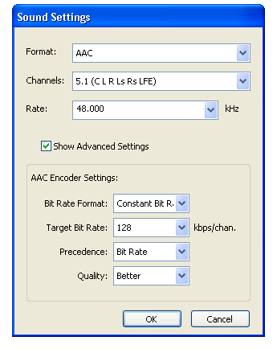

What’s New in QuickTime 7 for Windows
This chapter describes in detail the many new and enhanced features available in QuickTime 7 for Windows. It is intended to provide developers with a conceptual overview, in addition code samples and illustrations of usage, so that developers can take advantage of many of these new features in QuickTime 7 for Windows in their applications.
The new functions discussed in this chapter are cross-referenced, with links, to their complete descriptions in Chapter 3, “New Functions, Data Types, and Constants in QuickTime 7 for Windows.”
If you are a QuickTime API-level developer, content author, multimedia producer, or Webmaster who is currently working with QuickTime, you should read this chapter in order to understand the fundamental changes that have taken place in the QuickTime software architecture.
In this section:
Installing QuickTime 7
QuickTime in Perspective
Changes to QuickTime Player and QuickTime Pro
New COM/ActiveX Control
Audio Enhancements
Video Enhancements
Replacing NewMovieFrom... Functions
QuickTime Metadata Enhancements and API
QuickTime Sample Table API
Other Changes and Enhancements
Installing QuickTime 7
Both QuickTime 7 Player and QuickTime 7 Pro for Windows are available for download and purchase from Apple, in the case of the Pro version, and will install on Windows computers that meet the hardware and software requirements specified below.
Hardware and Software Requirements
QuickTime 7 for Windows requires the following minimum configuration:
Windows 2000 or Windows XP
Pentium processor or other processor equivalent
At least 128 MB of RAM
New Pro Key Required
QuickTime 7 for Windows replaces existing point releases of QuickTime 6 for Windows. A new Pro key is required; QuickTime 6 Pro keys will not unlock the Pro features of QuickTime 7 for Windows.
QuickTime in Perspective
The QuickTime API is dedicated to extending the reach of application developers by letting them invoke the full range of multimedia’s capabilities. It supports a wide range of standards-based formats, in addition to proprietary formats from Apple and others. The QuickTime API is not static, however, and has evolved over the course of the last decade to adopt new idioms, new data structures, and new ways of doing things.
The C/C++ portion of the QuickTime API comprises more than 2500 functions that provide services to applications. These services include audio and video playback; movie editing, composition, and streaming; still image import, export, and display; audio-visual interactivity, and more.
New Features of QuickTime 7 for Windows
This release of QuickTime includes a number of major new features for users, developers, and content creators, including improvements in the QuickTime architecture, file format, user interface, and API. There are significant improvements in the audio, video, and metadata capabilities, as well as a new APIs, and numerous other enhancements.
“Changes to QuickTime Player and QuickTime Pro” describes the new user interface for QuickTime Player and QuickTime Pro and some of the changes from previous versions of the Player.
“New COM/ActiveX Control” describes the new COM Control and how you can take advantage of the control using the tools available in Visual Basic .NET, C# and Visual Basic 6.
“Audio Enhancements” describes the many new audio features of QuickTime 7 for Windows, including support for multichannel sound, playback, compression, and export of high-resolution audio, a new sound description, and new functions for movie audio control, audio conversion configuration, audio extraction, movie export, and level and frequency metering.
“Video Enhancements” describes QuickTime’s new support for frame reordering video compression and the H.264 codec. Frame reordering support is a major advance that involves new sample tables for video, allowing video frames to have independent decode and display times. This allows improved display, editing, and compression of H.264 and other advanced video codecs. A new set of functions and structures are introduced to allow developers to work with samples that have independent decode and display times.
“Replacing NewMovieFrom... Functions” describes the
NewMovieFromPropertiesfunction, which allows you to set up properties before creating a movie. This function also allows you to create movies that are not necessarily associated with a graphics world, movies that can render their output to a visual context, such as an OpenGL texture buffer, and movies that play to a particular audio device.“QuickTime Metadata Enhancements and API” describes the new QuickTime extensible metadata format, allowing developers to efficiently reference text, audio, video, or other material that describes a movie, a track, or a media. Support is also added for including metadata from other file types in native format; the QuickTime 7 for Windows release includes native support for iTunes metadata.
“QuickTime Sample Table API” describes the new API for working with QT Sample Tables, a logical replacement for arrays of media sample references. The new API greatly extends the functionality of media sample references, and the new API supports frame reordering compressed media.
-
“Other Changes and Enhancements” discusses QuickTime 7’s new default install location for QuickTime, which has been moved from the directory
\Windows\System32\QuickTimeto\Program Files\QuickTime. A number of new APIs have been created to allow developers to locate the various directories created by the QuickTime installer. New updates and fixes to QuickTime for Java are also discussed in this section.
New Directions in QuickTime 7 for Windows
The QuickTime software architecture has been revised to expose platform-native interfaces on Windows to application developers. On Windows, this includes exposing QuickTime framework APIs via COM interfaces (ActiveX).
Important: For developers to take advantage of this revised architecture, QuickTime 7 for Windows has been rewritten from a cross-platform API (QTML) to a Windows-native implementation. This new implementation takes full advantage of the QuickTime COM ActiveX control. Ultimately, QuickTime 7 for Windows replaces the cross-platform application and framework that shipped as QuickTime 6.5 and its predecessors.
Key areas of change in QuickTime 7 for Windows include:
A shift of emphasis away from the Sound Manager approach throughout QuickTime.
A shift of emphasis toward configuring components using component properties and an abstraction layer, or context, and away from the exclusive use of standard dialogs supplemented by direct access to low-level components.
A shift of emphasis toward a more object-oriented organization, with more high-level functionality in QuickTime itself supporting lighter-weight applications.
What Developers Need To Do
If you work with audio at a relatively low level, you should
become familiar with the structures available in CoreAudioTypes.h and
learn how they differ from the older Sound Manager. The use of Core
Audio concepts and data structures is becoming ubiquitous in QuickTime.
For details, see Apple’s Core Audio documentation, specifically the in-line comments and
documentation in the header file CoreAudioTypes.h.
In particular, developers should look closely at the following structures
for audio in CoreAudioTypes.h:
AudioStreamBasicDescription. This structure encapsulates all the information for describing the basic format properties of a stream of audio data.-
AudioChannelLayout. This structure is used to specify channel layouts in files and hardware. AudioBufferList. A variable length array of AudioBuffer structures.
If you work directly with components, you should become familiar with the API for discovering, getting, and setting component properties. While standard dialogs for configuration are still common, there are often times when either no dialog or an application-specific dialog is preferable, as well as cases where low-level control or device-specific configuration is needed that a standard dialog cannot supply.
For example, the component property API allows configuration at any level of detail without requiring a user interface dialog or direct communication with low-level components. In many cases, an abstraction layer, or context––either visual or audio––can be created, allowing transparent connection to different kinds of low-level components, devices, or rendering engines.
The new extensible QuickTime metadata format, discussed in the section “QuickTime Metadata Enhancements and API,” uses a similar method of configuration through an abstract set of properties, as a means of “future-proofing” the architecture. The same is true of the new API for working with QuickTime sample tables, described in the section “QuickTime Sample Table API.”
Object Model Evolution
A substantial reorganization of the QuickTime engine has been taking place “under the hood” in this software release. This reorganization is intended to allow increased access to QuickTime functionality from QuickTime framework APIs via COM interfaces (ActiveX).
As the QuickTime document object model continues to evolve, the goal is to provide developers with easier access to the more powerful parts of the QuickTime engine using relatively lightweight object-oriented applications or even scripts––without having to delve into the large and sometimes complex procedural C/C++ QuickTime API.
In Summary QuickTime 6 through QuickTime 7
The following table summarizes the point releases of QuickTime 6 and the features of QuickTime 7.
QuickTime version |
Mac OS X |
Windows |
Mac OS 9 |
Features |
|---|---|---|---|---|
6 |
x |
x |
x |
MPEG-4 and lots more. |
6.01 |
x |
x |
x |
Bug fix for QuickTime 6. Last version for all three platforms. |
6.03 |
x |
Bug fixes to address security issues. Mac OS 9 only. |
||
6.1 |
x |
x |
Improved MPEG-4 video, full-screen modes, wired actions. |
|
6.2 |
x |
Support for iTunes 4, enhanced AAC codec, limited DRM. |
||
6.3 |
x |
x |
Improved AAC codec, 3GPP support, which includes AMR codec. |
|
6.4 for Mac OS X |
x |
New data reference functions, multithreading, new graphics functions, component and movie property access, other API additions. |
||
6.5 |
x |
x |
3GPP, 3GPP2, and AMC support for mobile multimedia, Unicode text support. |
|
6.5.1 |
x |
x |
Apple Lossless codec for audio. |
|
7 |
x |
x |
High-resolution, multichannel audio support, frame reordering video and H.264 support, new metadata format, QuickTime sample table API, changes to QuickTime Player and Pro UI. |
Changes to QuickTime Player and QuickTime Pro
QuickTime 7 for Windows introduces a number of new features and changes to the user interface of QuickTime Player and QuickTime Pro. These are briefly described in this section. New versions of both Player and Pro are available for download from Apple.
New in QuickTime Player
The new QuickTime Player is a native Windows application. The intent of this new design is to better integrate QuickTime Player in general with the Windows user experience.
The following are some of the new user-level features available in QuickTime Player:
H.264 video support. This state-of-the-art, standards-based codec delivers exceptional-quality video at the lowest data rate possible, across the entire bandwidth spectrum.
New audio and playback controls. Users can use the new A/V Controls window to adjust settings for the best audio and playback experience. Users can now easily change settings, including playback speed, volume, bass, treble, and balance. You can also use the jog shuttle control to easily navigate to a particular movie frame.
Zero-configuration streaming. You no longer need to set your Internet connection speed in QuickTime Preferences. QuickTime automatically determines the best connection speed for your computer. If a connection is lost during streaming, QuickTime automatically reconnects to the server. Users can also select a preset connection speed.
Live resize. Playback continues smoothly as you change the size of the QuickTime Player window.
Multichannel audio. QuickTime Player can now play 24 audio channels––and beyond. With external speakers, you can enjoy the full sound effects of movies and games.
By accessing the Window > Show Movie Properties window, selecting an audio track, and then selecting Audio Settings, you can set the volume, balance, bass, and treble for a QuickTime movie. In addition, if you select the sound track property in the window, you can set the speaker for each audio channel in that track, specifying the speaker through which the audio can be heard.
All-new content guide. The completely redesigned QuickTime Content Guide provides the latest in news, education, and entertainment on the Internet.
New in QuickTime Pro
The following are some of the new user-level features available in the Pro version of QuickTime Player:
Creating H.264 video. Users can take advantage of this codec for a variety of video needs, ranging from HD (high definition) to 3G (for mobile devices). This new codec provides better quality at lower bandwidth, enabling users to deliver high-quality video over the Internet.
Creating multichannel audio. Users can create a rich multimedia experience by labeling each audio channel (for example, Left, Right, Left Surround, LFE, and so on). QuickTime automatically mixes the audio to work with the speaker setup of each user.
Recording audio. With a digital audio device that supports USB and line-in microphones connected to your computer, you can capture and record audio. This new feature enables users to create, with a minimum of effort, podcasts for posting and publication on the Internet.
Full screen playback enhancements. Full screen mode now provides floating controls. These include pause, play, stop, fast forward, and rewind, as well as volume for audio control. Users move the pointer to display the controller; after a few seconds, the controller fades away. Note that the controller does not appear with interactive movies when the mouse is moved, so that it does not interfere with movie content. Users can press the keyboard control-C to make it appear or disappear immediately.
Users can access full screen mode by choosing the View > Full Screen or using its keyboard equivalent, Control-F. To display the DVD-style full screen controls, users choose QuickTime Player > Preferences > Player Preferences > Full Screen.
Enhanced and redesigned interface for movie settings. The Movie Properties window has been redesigned to facilitate movie authoring.
New options for image manipulation in the Visual Settings pane of the Movie Properties dialog of a video track.
In addition, users are provided with other options to manipulate and control image transparency in QuickTime movies and image files.
Other Changes and Enhancements
The following are some additional changes and enhancements in QuickTime 7 for Windows:
QuickTime Preferences now has the option “Use high quality video setting when available.” Users can set this as the default for displaying high-quality video tracks, such as DV.
The Open File command enables users to open any of a number of digital media types that QuickTime supports, including movies, still images, VR panoramas, Flash, and so on.
Choosing the File > New Audio Recording menu item enables you to record audio from an external or internal audio device. Once recording begins, a new QuickTime Player window specifically for recording appears.
To change the audio source for your recording, or to specify the quality of recording you want, you choose QuickTime Player > Preferences > Recording.
The Save dialog that the Save As command opens now has “Make movie as a self-contained” selected by default, which is a change from previous versions of QuickTime Player.
Choosing the Help > Update Existing Software menu item lets you update the version to the latest version of QuickTime.
The menu items in previous versions––Enable, Extract, and Delete––are now available in the Movie Properties window.
There is a new command––Trim to Selection––which replaces the previous command Trim. The Replace command has been removed, which means that users can no longer perform a delete-and-paste operation as a single operation.
The Movie menu has been renamed and is now the View menu. The Show Movie Properties command has been moved to the Windows menu.
Choosing the Window > Show Movie Properties menu item and selecting a track enables you to specify certain properties of that track. For example, if you select Annotations and want to add a field, you have multiple choices, including Album, Artist, Author, and so on.
Choosing the Window > Show Movie Properties menu item and selecting a track with Other Settings selected enables you to specify certain properties of that track, including language, preloading of the track, caching, and so on.
When the user moves the mouse over a selection of the movie, ticks appear that indicate you can make a selection over that area. When you move the mouse over the playbar, the movie will appear or disappear. Users can also set in and out points now by placing the current time marker and typing I or O.
New COM/ActiveX Control
QuickTime 7 for Windows includes a new QuickTime COM/ActiveX control. This new control is fully scriptable from Visual Basic, C#, JavaScript, C++, and other applications that can host COM objects.
This allows you to build stand-alone Windows applications that use QuickTime without needing to master QuickTime’s C/C++ API.
Important: This new COM control is included in addition to the QuickTime ActiveX browser plug-in. They are not the same thing.
The new QuickTime COM control has an API that will be familiar to Visual Basic programmers and others used to working with COM objects. It is intended to make it easy to create stand-alone Windows applications that use QuickTime. The new COM control is not a browser plug-in, and will not run in a browser or other Web-based application.
For Web-based applications, use the QuickTime ActiveX browser plug-in; it is scriptable using JavaScript from most browsers using the same platform-independent API as the QuickTime browser plug-ins for Netscape and Safari. The QuickTime browser plug-in is the cross-platform solution for writing Web pages that interact with QuickTime.
Note: The API for controlling the QuickTime ActiveX browser plug-in using JavaScript can be found at: http://developer.apple.com/documentation/quicktime/Conceptual/QTScripting_JavaScript/index.html.
The remainder of this section is intended for programmers who want to provide high-level QuickTime movie playback and control, including some import, export, and editing capabilities, to Windows applications written in Visual Basic and other languages.
Advantages For Developers
If you are a Visual Basic programmer or enterprise software developer doing in-house development, the COM control implementation offers a number of important advantages:
You can build Windows desktop applications more easily with Visual Basic or C#, combining QuickTime with the rich and powerful .NET Framework.
You can write useful utility scripts for working with QuickTime in either JavaScript or VBScript. These scripts can be run within the Windows Scripting Host environment by simply double-clicking the .js or .vbs script files, or from the command line using
cscript.You don’t have to access the low-level functionality provided by the full QuickTime API in order to use QuickTime in your application development.
For example, if your Windows server can run a Visual Basic, C#, or .js application that uses QuickTime, you have the possibility to create custom QuickTime content interactively, delivering that content over the Web. As long as your clients have QuickTime installed, your content will work with Windows and non-Windows clients, Internet Explorer and non-Internet Explorer browsers.
QuickTime Player itself uses the new QuickTime COM control for virtually all of its access to QuickTime.
Important: The QuickTime 7 ActiveX browser plug-in is not scriptable via Visual Basic. It is scriptable, however, in JavaScript using the same syntax as the Netscape-style plug-in, and works the same on all browsers for Windows or Macintosh.
How It Works
The new COM control is comprised of two separate DLLs:
An COM/ActiveX control (
QTOControl.dll) that “knows” how to open a movie and manage the interaction with the operating system and the host application.A COM library (
QTOLibrary.dll) which provides a COM interface to a movie and to QuickTime itself.
The COM library is a very thin layer that sits on top of the low level QuickTime APIs and provides a COM wrapper object for each logical QuickTime object. Each COM object exposes the properties, methods, and notifications of the QuickTime object it wraps.
The object hierarchy is illustrated in Figure 2-1.
Note that the QTMovieEqualizer object
illustrated in Figure 2-1 should be QTFrequencyMeter.
If you are a Windows developer, you know that the Component Object Model (COM) specification defines how a host application accesses the component, how the component notifies the host application of events, standard data types for data exchange with the OS or other components. A COM control is a type of COM component that has a visual display of some kind, restricting its placement to visual containers such as a form or dialog box. COM controls typically manage their own window.
In the .NET environment, the new QuickTime COM control is accessed via the .NET Framework’s COM Interop layer. Primary Interop Assemblies (.NET wrappers for COM objects) will be provided with the QuickTime 7 SDK.
Visual Basic .NET and C#
The QuickTime COM control has a property page––that is, a dialog box that allows you to set some QuickTime control properties. You access the property page by clicking the Property Pages button in the toolbar on the Properties window.
To use the constants and enumerations associated with the
QuickTime COM control, you must either explicitly precede them with
the QTOControlLib namespace
identifier, or else include an import for the QTOControlLib.
In Visual Basic, you do this with an Imports directive at the beginning of your module.
An example of using an explicit namespace identifier is, as follows:
AxQTControl1.Sizing = QTOControlLib.QTSizingModeEnum.qtControlFitsMovie |
AxQTControl1.SetScale(2) |
AxQTControl1.Sizing = QTOControlLib.QTSizingModeEnum.qtMovieFitsControl |
The same example with imported namespace:
Imports QTOControlLib |
AxQTControl1.Sizing = QTSizingModeEnum.qtControlFitsMovie |
AxQTControl1.SetScale(2) |
AxQTControl1.Sizing = QTSizingModeEnum.qtMovieFitsControl |
In C#, the namespace can be imported with the using directive:
using QTOControlLib; |
To use the constants and enumerations associated with the
QT COM library, you must either explicitly precede them with the QTOLibrary namespace
identifier, or else include an import (C#: using directive)
for the QTOLibrary.
Important:
If you are working with QuickTime audio, when you open
a movie using the COM/ActiveX control, you will get the pitch-preserving varispeed
by default. This is not the case when you open a movie using legacy
interfaces, nor when using NewMovieFromProperties without having
set the kQTAudioPropertyID_RateChangesPreservePitch property
to TRUE.
Getting Started With QuickTime COM Control
Once you instantiate the QuickTime COM control and load a
movie into it, you can then get at the QTOLibrary object
model via the control’s Movie property, which returns a QTMovie
COM object.
To get started with the new COM control, in VB.NET or C#:
Create a new Windows Application project.
Right-click on the Windows Forms toolbox, choose Add/Remove Items... and select the COM Components tab.
Scroll down until you find Apple QuickTime Control 2.0.
Click this control and click OK to add the QuickTime control to your toolbox. You should now see a QuickTime icon.
Place the control on Form1.
Place two buttons on the form and code as follows:
Private Sub Button1_Click(...) Handles Button1.Click |
AxQTControl1.URL = "d:\movies\sample.mov" 'Change to your own movie! |
End Sub |
Private Sub Button2_Click(...) Handles Button2.Click |
AxQTControl1.Movie.Play() |
End Sub |
After you have completed these steps, you can:
Build and run the application.
Click Button1 to load a movie; then click Button2 to play the movie.
In Visual Basic 6, you need to follow these steps:
Create a new Standard EXE project.
Choose Project | Components and scroll down to the Apple QuickTime Control 2.0. Click this component and click OK to add to the Visual Basic 6 toolbox.
Add the QuickTime control to Form1.
Create two buttons and code as follows:
Private Sub Command1_Click() |
QTControl1.URL = "d:\movies\sample.mov" 'Change to your own movie! |
End Sub |
Private Sub Command2_Click() |
QTControl1.Movie.Play |
End Sub |
Now you can run the application. Click Command1 to load the movie and Command2 to play the movie.
Once you have loaded a movie and have the QTMovie object from the control’s Movie property, you can proceed to delve down into the object model. For example:
'Iterate movie tracks (VB6) |
Dim myMovie As QTMovie |
Dim t As String |
Set myMovie = QTControl1.Movie |
Dim trk As QTTrack |
Dim qtu As New QTUtils |
For Each trk In myMovie.Tracks |
t = t + "Track : " + CStr(i) + vbCrLf |
t = t + vbTab + "Type : " + qtu.FourCharCodeToString(trk.Type) |
+ vbCrLf |
t = t + vbTab + "Format : " + trk.Format + vbCrLf |
t = t + vbTab + "Duration : " + CStr(trk.Duration) + vbCrLf |
Next trk |
txtResults = t$ |
In order to use the QuickTime COM object types in your Visual Basic 6 application you will need to add the QuickTime COM library to your project. Choose Project | References and add the Apple QuickTime Library 2.0.
Example Code To Create a Simple COM/ActiveX Control Application in Visual Basic 6
This section includes two code samples, one bare bones, letting you simply open and edit a QuickTime movie, and the other more fully featured. Using this example code you can create a simple COM/ActiveX control application in Visual Basic 6. The code is provided here with some comments and discussion.
Important: A good learning tutorial on how to script the COM/ActiveX control is available at http://developer.apple.com/quicktime/activexcontrol.html and the sample code that lets you build a simple movie player application in Visual Basic 6 is available at http://developer.apple.com/samplecode/MoviePlayer/MoviePlayer.html. The sample demonstrates the following capabilities: movie playback with a movie controller, opening and closing movies, opening and closing movies from URLs, simple editing with cut, copy, and paste commands implemented; undo, export, export with a dialog, QuickTime event handling, Form resizing, error handling, fullscreen playback, as well as movie information display, such as duration, track types, track formats, and so on. If you are a Windows developer working with the new COM/ActiveX control, you are encouraged to explore both the tutorial and the sample code available, which extends the code examples #1 and #2 described in the next section, adding, in particular, export and QuickTime event notification functionality.
Code Example #1
The sample COM/ActiveX control application has a Form, with File and Edit menus. The File menu includes the following menu items:
Open
Close
Full Screen
Exit
The Edit menu includes these menu items:
Undo
Cut
Copy
Paste
If you want to edit any of these menus, you bring up the Form, go to Tools, then open the Menu Editor. The name of the menu determines the name of the handler that gets called.
In Example #1, Menu File_click is the handler that is called and passed the index. None of the menu items, as shown in Listing 2-1, are hooked up yet; when you click an item, it will exit the application.
If you look at the Form, you see there is an instance of the QuickTime Control. When you click an object in Visual Basic, it brings up the Property Inspector.
By default, when you create a new object, it takes the name
of the class and appends a number to it. Unless you change it, it
is called QTControl1.
When it launches, there is an instance of this QTControl1 created.
Listing 2-1 shows you how to show an open a file and display a common dialog for the QuickTime control. The code in Listing 2-2 adds menu items to the File and Edit menu. The remaining code listings in Example #2 deal with sizing the movie, when you want to change the size of the movie to fit the size of the control, or display the movie at full screen. Example #2 also shows how to add an information window to the control, in addition to minimal error checking, and demonstrates how to respond to events.
Important: Using Visual Basic, if you run a project, it may keep the control open, even when you quit the project. For any dll that QuickTime loads, Visual Basic keeps everything in your project loaded, so you can get into a state where you have to quit QuickTime and relaunch. After doing this, everything will work as expected.
Remember, you need to add the Apple QuickTime Control 2.0 and Microsoft Common Dialog Control 6.0 components to the project.
Listing 2-1 The GetFileName function
to display a dialog for the QuickTime control
Function GetFileName() |
Form1.CommonDialog1.ShowOpen |
GetFileName = Form1.CommonDialog1.FileName |
End Function |
Listing 2-2 Adding menu items
Private Sub mnuEdit_Click(Index As Integer) |
Select Case Index |
Case 0 'Undo |
Case 2 'Cut |
Case 3 'Copy |
Case 4 'Paste |
End Select |
End Sub |
Private Sub mnuFile_Click(Index As Integer) |
Select Case Index |
Case 0 'Open |
QTControl1.URL = GetFileName() |
Case 1 'Close |
Case 3 'Full Screen |
Case 5 'Exit |
Unload Me |
End |
End Select |
End Sub |
Code Example #2
The following code (Example #2) provides a more fully featured QuickTime control. In this example, you add an information window, minimal error checking, and the capability of responding to events.
Follow these steps:
Create a new VB6 Standard EXE project.
Add the Apple QuickTime Control 2.0 and Microsoft Common Dialog Control 6.0 components to the project.
Add the Apple QuickTime Library 2.0 reference to the project.
Add two forms:
Form1andfrmInfo.To
Form1add:File menu (
mnuFile) with Open…, Open URL…, Close, Get Info, Full Screen and Exit menu items.Edit menu (
mnuEdit) with Undo, Cut, Copy, Paste.A Common Dialog control (
CommonDialog1).A QuickTime control (
QTControl1).
Set the menu items index values to match the corresponding index values in
mnuFile_ClickandmnuEdit_Click.To
frmInfoadd:4 Label controls:
lblName,lblInfo,lblCaptionsandlblDatawithAutoSize=True
Paste Listing 2-3 and Listing 2-4 into the code window of
Form1and Listing 2-5 into the code window offrmInfo.
Listing 2-3 The VB 6 code for the QuickTime control sample movie form
Object = "{7B92F833-027D-402B-BFF9-A67697366F4E}#1.0#0"; "QTOControl.dll" |
Object = "{F9043C88-F6F2-101A-A3C9-08002B2F49FB}#1.2#0"; "comdlg32.ocx" |
Begin VB.Form MovieForm |
Caption = "Movie" |
ClientHeight = 4260 |
ClientLeft = 132 |
ClientTop = 816 |
ClientWidth = 4080 |
LinkTopic = "MovieForm" |
ScaleHeight = 4260 |
ScaleWidth = 4080 |
StartUpPosition = 3 'Windows Default |
Begin MSComDlg.CommonDialog CommonDialog1 |
Left = 3240 |
Top = 600 |
_ExtentX = 847 |
_ExtentY = 847 |
_Version = 393216 |
End |
Begin QTOControlLibCtl.QTControl QTControl1 |
Height = 4332 |
Left = 0 |
TabIndex = 0 |
Top = 0 |
Width = 4056 |
_cx = 7154 |
_cy = 7641 |
BackColor = -2147483644 |
BorderColor = 0 |
BorderStyle = 0 |
MovieControllerVisible= -1 'True |
Sizing = 0 |
URL = "" |
BaseURL = "" |
AutoPlay = "" |
End |
Begin VB.Menu mnuBar |
Caption = "&File" |
Index = 0 |
Begin VB.Menu mnuFile |
Caption = "&Open..." |
Index = 0 |
Shortcut = ^O |
End |
Begin VB.Menu mnuFile |
Caption = "Open &URL..." |
Index = 1 |
End |
Begin VB.Menu mnuFile |
Caption = "&Close" |
Index = 2 |
End |
Begin VB.Menu mnuFile |
Caption = "-" |
Index = 3 |
End |
Begin VB.Menu mnuFile |
Caption = "&Full Screen" |
Index = 4 |
End |
Begin VB.Menu mnuFile |
Caption = "Get Info" |
Index = 5 |
Shortcut = ^I |
End |
Begin VB.Menu mnuFile |
Caption = "-" |
Index = 6 |
End |
Begin VB.Menu mnuFile |
Caption = "Exit" |
Index = 7 |
End |
End |
Begin VB.Menu mnuBar |
Caption = "Edit" |
Index = 1 |
Begin VB.Menu mnuEdit |
Caption = "Undo" |
Index = 0 |
End |
Begin VB.Menu mnuEdit |
Caption = "Cut" |
Index = 2 |
End |
Begin VB.Menu mnuEdit |
Caption = "Copy" |
Index = 3 |
End |
Begin VB.Menu mnuEdit |
Caption = "Paste" |
Index = 4 |
End |
End |
End |
Attribute VB_Name = "MovieForm" |
Attribute VB_GlobalNameSpace = False |
Attribute VB_Creatable = False |
Attribute VB_PredeclaredId = True |
Attribute VB_Exposed = False |
Option Explicit |
Dim gManualFormResize As Boolean |
Private Declare Function GetSystemMetrics Lib "user32" (ByVal nIndex As Long) As Long |
Private Const SM_CYCAPTION = 4 |
Private Const SM_CYFRAME = 33 |
Private Const SM_CYMENU = 15 |
Function GetFileName() |
MovieForm.CommonDialog1.InitDir = "d:\QuickTime\Movies" |
MovieForm.CommonDialog1.ShowOpen |
GetFileName = MovieForm.CommonDialog1.FileName |
End Function |
Function GetFormBorderWidth() |
GetFormBorderWidth = GetSystemMetrics(SM_CYFRAME) * 2 |
End Function |
Function GetFormBorderHeight() |
GetFormBorderHeight = GetSystemMetrics(SM_CYCAPTION) + GetSystemMetrics(SM_CYMENU) + (GetSystemMetrics(SM_CYFRAME) * 2) |
End Function |
Private Sub Form_Load() |
QTControl1.ErrorHandling = qtErrorHandlingRaiseException |
QTControl1.Sizing = qtControlFitsMovie |
Load MovieInfo |
End Sub |
Private Sub Form_Resize() |
Dim oldSizingMode As QTSizingModeEnum |
gManualFormResize = True ' global flag so _SizeChanged won't respond |
' change sizing mode so the movie tracks the control's size |
oldSizingMode = QTControl1.Sizing |
QTControl1.Sizing = qtMovieFitsControl |
QTControl1.Move 0, 0, Me.Width - (GetFormBorderWidth() * Screen.TwipsPerPixelX), Me.Height - (GetFormBorderHeight() * Screen.TwipsPerPixelY) |
QTControl1.Sizing = oldSizingMode |
gManualFormResize = False |
End Sub |
Private Sub Form_Unload(Cancel As Integer) |
MovieInfo.SetInfoMovie Nothing |
QTControl1.URL = "" |
DoEvents |
End |
End Sub |
Private Sub mnuEdit_Click(Index As Integer) |
If QTControl1.Movie Is Nothing Then Exit Sub |
Select Case Index |
Case 0 ' Undo |
QTControl1.Movie.Undo |
Case 2 ' Cut |
QTControl1.Movie.Cut |
Case 3 ' Copy |
QTControl1.Movie.Copy |
Case 4 ' Paste |
QTControl1.Movie.Paste |
End Select |
End Sub |
Private Sub mnuFile_Click(Index As Integer) |
On Error GoTo ErrorHandler |
Dim filePath |
Select Case Index |
Case 0 ' Open |
filePath = GetFileName() |
If filePath <> "" Then |
QTControl1.URL = filePath |
MovieInfo.SetInfoMovie QTControl1.Movie |
End If |
Case 1 ' Open URL |
Dim movieURL As String |
movieURL = InputBox("Enter a URL:", "URL", "http://www.server.com/ movies/sample.mov") |
If movieURL <> "" Then |
QTControl1.URL = movieURL |
MovieInfo.SetInfoMovie QTControl1.Movie |
End If |
Case 2 ' Close |
QTControl1.URL = "" |
MovieInfo.SetInfoMovie Nothing |
Case 4 'Full Screen |
If QTControl1.URL <> "" Then QTControl1.FullScreen = True |
Case 5 ' Get Info |
MovieInfo.SetInfoMovie QTControl1.Movie |
MovieInfo.Move Me.Left + Me.Width + 200, Me.Top |
MovieInfo.Show |
Case 7 ' Exit |
Unload Me |
End |
End Select |
Exit Sub |
ErrorHandler: |
Beep |
Dim errStr As String |
errStr = "Failed with error #" & Hex(Err.Number) & ", " & Err.Description |
MsgBox errStr, vbCritical |
End Sub |
Private Sub QTControl1_SizeChanged(ByVal Width As Long, ByVal Height As Long) |
' ignore event if control was resized as a result of form being resized. |
If gManualFormResize Then Exit Sub |
' resize window to accomodate control |
Me.Move Me.Left, Me.Top, (Width + GetFormBorderWidth()) * Screen.TwipsPerPixelX, (Height + GetFormBorderHeight()) * Screen.TwipsPerPixelY |
End Sub |
Private Sub QTControl1_StatusUpdate(ByVal statusCodeType As Long, ByVal statusCode As Long, ByVal statusMessage As String) |
Select Case statusCodeType |
Case qtStatusCodeTypeControl |
Select Case statusCode |
Case qtStatusFullScreenBegin |
Me.Hide ' hide movie window |
Case qtStatusFullScreenEnd |
QTControl1.SetScale 1 ' set back to a reasonable size |
Me.Show |
End Select |
End Select |
End Sub |
Listing 2-4 The VB 6 code for the movie information form
Begin VB.Form MovieInfo |
BorderStyle = 4 'Fixed ToolWindow |
Caption = "Movie Info" |
ClientHeight = 5148 |
ClientLeft = 48 |
ClientTop = 288 |
ClientWidth = 5880 |
LinkTopic = "Form2" |
MaxButton = 0 'False |
MinButton = 0 'False |
ScaleHeight = 5148 |
ScaleWidth = 5880 |
ShowInTaskbar = 0 'False |
StartUpPosition = 3 'Windows Default |
Begin VB.Frame Frame1 |
Height = 3495 |
Left = 120 |
TabIndex = 2 |
Top = 1560 |
Width = 5655 |
Begin VB.Label lblData |
Height = 3135 |
Left = 1560 |
TabIndex = 4 |
Top = 240 |
Width = 3975 |
End |
Begin VB.Label lblCaptions |
Alignment = 1 'Right Justify |
BeginProperty Font |
Name = "MS Sans Serif" |
Size = 7.8 |
Charset = 0 |
Weight = 700 |
Underline = 0 'False |
Italic = 0 'False |
Strikethrough = 0 'False |
EndProperty |
Height = 3135 |
Left = 120 |
TabIndex = 3 |
Top = 240 |
Width = 1335 |
End |
End |
Begin VB.Label lblInfo |
Alignment = 2 'Center |
BeginProperty Font |
Name = "MS Sans Serif" |
Size = 7.8 |
Charset = 0 |
Weight = 700 |
Underline = 0 'False |
Italic = 0 'False |
Strikethrough = 0 'False |
EndProperty |
Height = 975 |
Left = 120 |
TabIndex = 1 |
Top = 480 |
Width = 5535 |
End |
Begin VB.Label lblName |
Alignment = 2 'Center |
BeginProperty Font |
Name = "MS Sans Serif" |
Size = 9.6 |
Charset = 0 |
Weight = 700 |
Underline = 0 'False |
Italic = 0 'False |
Strikethrough = 0 'False |
EndProperty |
Height = 255 |
Left = 120 |
TabIndex = 0 |
Top = 120 |
Width = 5535 |
End |
End |
Attribute VB_Name = "MovieInfo" |
Attribute VB_GlobalNameSpace = False |
Attribute VB_Creatable = False |
Attribute VB_PredeclaredId = True |
Attribute VB_Exposed = False |
Option Explicit |
Dim gMovie As QTMovie |
Private Sub Form_Load() |
DisplayMovieData |
End Sub |
Sub SetInfoMovie(myMovie As QTMovie) |
Set gMovie = myMovie |
DisplayMovieData |
End Sub |
Function MovieAnnotation(annoID As Long, mov As QTMovie) As String |
' Annotation returns an error if asked for an annotation that |
' does not exist (so you can tell the difference between an |
' annotation that is missing and one that is set to an empty |
' string), so we need to be prepared for an exception |
On Error Resume Next |
Dim anno As String |
anno$ = "" ' value will remain if getting value throws exception |
If Not (mov Is Nothing) Then anno$ = mov.Annotation(annoID) |
MovieAnnotation = anno |
End Function |
Sub DisplayMovieData() |
Dim dataStr As String |
Dim captionsStr As String |
Dim annoStr As String |
Dim track As QTTrack |
lblName = "" |
lblInfo = "" |
lblCaptions = "" |
lblData = "" |
If gMovie Is Nothing Then Exit Sub |
On Error GoTo ErrorHandler |
lblName = MovieAnnotation(qtAnnotationFullName, gMovie) |
' get some annotations |
lblInfo = "" |
annoStr = MovieAnnotation(qtAnnotationCopyright, gMovie) |
If Trim(annoStr) <> "" Then lblInfo = lblInfo & annoStr & vbCrLf |
annoStr = MovieAnnotation(qtAnnotationAuthor, gMovie) |
If Trim(annoStr) <> "" Then lblInfo = lblInfo & annoStr & vbCrLf |
annoStr = MovieAnnotation(qtAnnotationComments, gMovie) |
If Trim(annoStr) <> "" Then lblInfo = lblInfo & annoStr & vbCrLf |
annoStr = MovieAnnotation(qtAnnotationDescription, gMovie) |
If Trim(annoStr) <> "" Then lblInfo = lblInfo & annoStr & vbCrLf |
captionsStr = "Source:" & vbCrLf & vbCrLf |
dataStr = Trim(gMovie.URL) & vbCrLf & vbCrLf |
captionsStr = captionsStr & "Size:" & vbCrLf & vbCrLf |
dataStr = dataStr & gMovie.Width & " x " & gMovie.Height & vbCrLf & vbCrLf |
captionsStr = captionsStr & "Duration:" & vbCrLf & vbCrLf |
dataStr = dataStr & gMovie.Duration & vbCrLf & vbCrLf |
For Each track In gMovie.Tracks |
captionsStr = captionsStr & track.DisplayName & ":" & vbCrLf |
dataStr = dataStr & track.Format |
If track.Height > 0 Then |
dataStr = dataStr & ", " & track.Width & " x " & track.Height & vbCrLf |
End If |
Next track |
lblCaptions = captionsStr |
lblData = dataStr |
Exit Sub |
ErrorHandler: |
dataStr = dataStr & "Error #" & Hex(Err.Number) & ", " & Err.Description & vbCrLf |
Resume Next |
End Sub |
Listing 2-5 Code for handling the sizing of the QuickTime movie
Option Explicit |
Dim bFormResized As Boolean |
Private Sub Form_Load() |
QTControl1.ErrorHandling = qtErrorHandlingRaiseException |
QTControl1.sizing = qtControlFitsMovie |
Load frmInfo |
End Sub |
Private Sub Form_Resize() |
Dim sizingMode As QTSizingModeEnum |
Dim resetSizing As Boolean |
bFormResized = True |
' set the sizing mode to "movie fits control" so the movie will adjust |
' itself as to the new control size |
sizingMode = QTControl1.sizing |
If sizingMode = qtControlFitsMovie Then |
QTControl1.sizing = qtMovieFitsControl |
resetSizing = True |
Else |
resetSizing = False |
End If |
QTControl1.Move 0, 0, Me.Width - (GetFormBorderWidth() * Screen.TwipsPerPixelX), Me.Height - (GetFormBorderHeight() * Screen.TwipsPerPixelY) |
If resetSizing Then QTControl1.sizing = sizingMode |
bFormResized = False |
End Sub |
Private Sub Form_Unload(Cancel As Integer) |
frmInfo.SetInfoMovie Nothing |
QTControl1.URL = "" |
DoEvents |
End |
End Sub |
Private Sub mnuEdit_Click(Index As Integer) |
Select Case Index |
Case 0 'Undo |
QTControl1.Movie.Undo |
Case 2 'Cut |
QTControl1.Movie.Cut |
Case 3 'Copy |
QTControl1.Movie.Copy |
Case 4 'Paste |
QTControl1.Movie.Paste |
End Select |
End Sub |
Private Sub mnuFile_Click(Index As Integer) |
Dim FileName |
Select Case Index |
Case 0 'Open |
' make the control automatically resize itself whenever the movie |
' size changes |
QTControl1.sizing = qtControlFitsMovie |
FileName = GetFileName() |
If FileName <> "" Then |
QTControl1.URL = FileName |
If frmInfo.Visible Then |
frmInfo.SetInfoMovie QTControl1.Movie |
End If |
End If |
Case 1 'Open URL |
QTControl1.sizing = qtControlFitsMovie |
Dim URL$ |
URL$ = InputBox("Enter a URL:", "URL", "http://www.server.com/movies/ sample.mov") |
If URL$ <> "" Then |
QTControl1.URL = URL$ |
If frmInfo.Visible Then |
frmInfo.SetInfoMovie QTControl1.Movie |
End If |
End If |
Case 2 'Close |
frmInfo.SetInfoMovie Nothing |
QTControl1.URL = "" |
frmInfo.Hide |
Case 4 'Full Screen |
If QTControl1.URL <> "" Then QTControl1.FullScreen = True |
Case 5 'Get Info |
If QTControl1.URL <> "" Then |
frmInfo.SetInfoMovie QTControl1.Movie |
frmInfo.Move Me.Left + Me.Width + 200, Me.Top |
frmInfo.Show |
End If |
Case 7 'Exit |
Unload Me |
End |
End Select |
End Sub |
Private Sub QTControl1_SizeChanged(ByVal Width As Long, ByVal Height As Long) |
' Ignore event if control was resized as a result of form being resized. |
' avoids race condition |
If bFormResized Then Exit Sub |
'Resize window to accomodate control |
Me.Move Me.Left, Me.Top, (Width + GetFormBorderWidth()) * Screen.TwipsPerPixelX, (Height + GetFormBorderHeight()) * Screen.TwipsPerPixelY |
End Sub |
Audio Enhancements
QuickTime 7 for Windows breaks free of the limitations of the Sound Manager, adding many new features and capabilities that developers can take advantage of in their audio playback and authoring applications.
Notably, QuickTime 7 for Windows now supports high-resolution audio, that is, audio sampled at sample rates higher than 64 kHz and up to 192 kHz, with up to 24 channels and support for surround sound. This is in stark contrast to the implementation of the Sound Manager, which only supported mono and stereo.
The result of these new audio enhancements is as follows:
A much richer approach to sound in QuickTime, with support for higher sampling rates, such as 96 kHz and 192 kHz, multiple channels and multiple channel layouts, including 5.1 surround sound and up to 24 discrete channels, meaning channels without any layout imposed on them. Support is also provided for a variety of more accurate audio representations, such as 24-bit uncompressed audio, playback, and export. Synchronization and access to uncompressed audio on a per-sample basis is also greatly improved, including access to raw PCM audio samples from VBR-compressed audio sources.
The introduction of a new abstraction layer: the audio context. An audio context represents a connection to a particular audio device. Using an audio context allows you to easily connect a movie to an audio device.
Conversion of audio from one format to another on the fly, performing channel mix-down or remapping, upsampling or downsampling, and sample conversion as needed. This conversion can be performed during export, or as part of the output chain to a device with different playback characteristics than the stored audio.
Most components––with a few exceptions such as streaming and MPEG-4 exporting––will be able to make use of these new capabilities immediately. This release of QuickTime updates a number of components so that it is possible to play back, edit, and export a broad variety of enhanced audio right away.
In brief, QuickTime 7 for Windows includes the following enhancements, discussed in this section:
A new abstraction layer for audio
A new sound description
A suite of sound description functions
New movie property to prevent pitch-shifting
New functions for gain, balance, and mute
New level and frequency metering API
New audio extraction and conversion API
New audio compression configuration component
New movie export properties to support high-resolution audio
New Abstraction Layer For Audio
QuickTime 7 for Windows introduces the audio context––a new abstraction that represents playing to an audio device.
As defined, a QuickTime audio context is an abstraction for a connection to an audio device. This allows you to work more easily and efficiently with either single or multiple audio devices in your application.
Creating an Audio Context
To create an audio context, you call QTAudioContextCreateForAudioDevice and
pass in the UID of the device, which is a CFStringRef.
An audio context is then returned. You can then pass that audio
content either into NewMovieFromProperties,
or you can open your movie however you would normally open it and
call SetMovieAudioContext. What that does
is route all the sound tracks of the movie to that particular device.
If you want to create an audio context and assign a device to it on Windows, use the following call:
extern OSStatus |
QTAudioContextCreateForAudioDevice( |
CFAllocatorRef allocator, |
CFStringRef audioDeviceUID, |
CFDictionaryRef options, |
QTAudioContextRef * newAudioContextOut); |
Then use the SetMovieAudioContext call
on your movie, and it will play to that device.
To get a list of devices on Windows––so you can pass an audioDeviceUID CFString
to QTAudioContextCreateForAudioDevice––use
the native Windows DirectSound APIs (specifically, the DirectSoundEnumerate function,
from dsound.h). Iterating
through the list of DirectSound devices, you get a callback for
each one that gives you the device’s GUID (LPGUID),
description (LPCSTR),
and module (LPCSTR).
The most important one is the description, which is the device’s
name. QuickTime uses this as its device UID on Windows. So once
you find the device you want, you create a CFStringRef for
it, and pass this to QTAudioContextCreateForAudioDevice.
Important:
On Windows, the audioDeviceUID is
the GUID of a DirectSound device, stringified using such Win32 functions
as StringFromCLSID or StringFromGUID2,
then wrapped in a CFStringRef using CFStringCreateWithCharacters.
After passing the audioDeviceUID CFStringRef to QTAudioContextCreateForAudioDevice, remember
to CFRelease the CFStringRef you created.
Note: If you want to
route two different movies to the same device, you cannot use the
same audio context because the audio context is a single connection
to that device. What you do is call QTAudioContextCreateForAudioDevice again
and pass in the same device UID to get another AudioContext for
the same device, and pass that to your second movie.
High-Resolution Audio Support
High-resolution audio makes use of an enhanced sound description with the ability to describe high sampling rates, multiple channels, and more accurate audio representation and reproduction.
Significantly, the new sound description has larger fields to describe the sampling rate and number of channels, so that the sound description is no longer the limiting factor for these characteristics.
The sound description has built-in support for variable-bit-rate
(VBR) audio encoding with variable-duration compressed frames. Extensions
to the sound description allow you to describe the spatial layout
of the channels, such as quadraphonic and 5.1 surround sound, or
to label channels as discrete––that is, not
tied to a particular geometry. For more information, see “SoundDescriptionV2”.
New movie audio properties include a summary channel layout property, providing a nonredundant listing of all the channel types used in the movie—such as L/R for stereo, or L/R/Ls/Rs/C for 5-channel surround sound—and a device channel layout, listing all the channel types used by the movie’s output device.
Figure 2-2 shows the layout of surround speakers. The terminology is defined in Table 2-1.
Speaker |
Definition |
|---|---|
L |
Left speaker |
R |
Right speaker |
C |
Center speaker |
Ls |
Left surround speaker |
Rs |
Right surround speaker |
LFE |
Sub-woofer (Note that LFE is an abbreviation for low-frequency effects) |
The new sound description is supported by the data types and
structures found in CoreAudioTypes.h.
While the Core Audio API itself is not available to Windows programmers,
QuickTime for Windows does include the relevant data structures,
such as audio buffers, stream descriptions, and channel layouts
defined in CoreAudioTypes.h.
A suite of functions has been included to support the handling of sound descriptions opaquely.
Playback
Playback at the high level is automatic and transparent; if you play a movie that contains 96 kHz or 192 kHz sound, it should just work. You should not have to modify your code. The same is true for cut-and-paste editing. If the chosen output device does not support the channel layout, sampling rate, or sample size of the movie audio, mix-down and resampling are performed automatically.
Import of high-resolution audio is automatic, provided the import component has been updated to support high-resolution audio.
QuickTime will play to any device that has a DirectSound driver.
If it appears in the list of devices when you call DirectSoundEnumerate,
QuickTime will play to it.
There are some caveats, however. If it is a device that only accepts a compressed stream (that is, an AC-3 stream), you will only hear silence. QuickTime does not provide CoreAudio HAL or AudioUnit or AudioConverter interfaces on Windows, so you cannot use these to query devices. You may use the facilities that DirectSound provides. QuickTime provides an audio panel in the QuickTime Preferences on Windows that lets users to specify the channel layout, sample rate, and bit depth of their playback device.
QuickTime Settings Dialogs
QuickTime 7 for Windows introduces a new series of settings dialogs for improved control over audio playback.
QuickTime does not manage a list of devices that is separate from the list available in Windows. If you want to set your input and output devices, you click in the appropriate settings field. In the Sound Out area of the Audio tab in the QuickTime Settings dialog (Figure 2-3), the sound characteristics of the playback device are not changed. If the user specifies 48 kHz, for example, QuickTime will not go to the output device and flip a switch to that setting.
Figure 2-3 illustrates the QuickTime Settings dialog with the Audio tab selected. Thisdialog lets users configure QuickTime to use the proper settings for their audio device. Users can select the output format supported by aparticular audio device, including sample rate, sample size, and number of channels.(You cannot use this dialog to change the settings of the actual output device, only the format that QuickTime sends to the device.)
Figure 2-4 illustrates the various settings that are available for audio, including channel assignment. This information panel in QuickTime Player lets users modify some aspects of a movie’s audio, such as volume, balance, bass, and treble.
Figure 2-5 illustrates the Sound Settings dialog in QuickTime 7 for Windows. This audio compression settings dialog comes up during an export.
Figure 2-5 Sound settings dialog that includes user-definable choices for format, channels, and rate of audio playback
Export
Export of high-resolution audio is likewise transparent at
the high level. Export at the lower levels requires some additional
code. Your application must “opt in” to the new audio features
explicitly if it “talks” directly to an export component instance.
You do this by calling QTSetComponentProperty on
the exporter component instance and passing in the kQTMovieExporterPropertyID_EnableHighResolutionAudioFeatures property.
This is illustrated in the code sample Listing 2-6.
Sound Description Creation and Accessor Functions
QuickTime 7 for Windows provides new functions that let you create, access, and convert sound descriptions.
Sound descriptions can take three basic inputs: an AudioStreamBasicDescription,
a channel layout, and a magic cookie. Sound descriptions are now
treated as if they are opaque. In QuickTime 7, when you are handed
a sound description, for example, you don’t have to go in and
look at the version field.
If you want to create a sound description, you can simply
hand it an AudioStreamBasicDescription,
an optional channel layout if you have one, and an optional magic
cookie if you need one for the described audio format. Note that
it is the format (codec) of the audio that determines whether it
needs a magic cookie, not the format of the sound description.
By calling QTSoundDescriptionCreate,
you can make a sound description of any version you choose––for
example, one that is of the lowest possible version, given that it
is stereo and 16-bit, or one of any particular version you want
or request.
The main point about the new API is the capability provided to create a sound description and the usage of new property getters and setters. To accomplish this, follow these steps:
Get an
AudioStreamBasicDescriptionfrom a sound description.Get a channel layout from a sound description (if there is one).
Get the magic cookie from magic cookie (if there is one).
You can also:
Get a user-readable textual description of the format described by the
SoundDescription.Add or replace a channel layout to an existing sound description. For example, this is what QuickTime Player does in the properties panel where the user can change the channel assignments.
Add a magic cookie to a sound description. (This is not needed very often unless you are writing a movie importer, for example.)
To convert an existing QuickTime sound description into the
new V2 sound description, you call QTSoundDescriptionConvert.
This lets you convert sound descriptions from one version to another.
For a description of versions 0 and 1 of the SoundDescription record,
see the documentation for the QuickTime File Format.
For a description of version 2 of the SoundDescription record,
see “SoundDescriptionV2”.
For details of the sound description functions, see QTSoundDescriptionCreate and QTSoundDescriptionConvert.
For details on getting and setting sound description properties,
see QTSoundDescriptionGetProperty andQTSoundDescriptionSetProperty
Audio Playback Enhancements
In addition to playing back high-resolution audio, QuickTime 7 for Windows introduces the following audio playback enhancements:
The ability to play movies at a nonstandard rate without pitch-shifting the audio.
Getting and setting the gain, balance, and mute values for a movie, or the gain and mute values for a track.
Providing audio level and frequency metering during playback.
Preventing Pitch-Shifting
A new property is available for use with the NewMovieFromProperties function: kQTAudioPropertyID_RateChangesPreservePitch.
When this property is set, changing the movie playback rate will
not result in pitch-shifting of the audio. This allows you to fast-forward
through a movie without hearing chipmunks.
Setting this property also affects playback of scaled edits, making it possible to change the tempo of a sound segment or scale it to line up with a video segment, for example, without changing the pitch of the sound.
Gain, Mute, and Balance
New functions are available to set the left-right balance for a movie, set the gain for a movie or track, or to mute and unmute a movie or track without changing the gain or balance settings.
The gain and mute functions duplicate existing functions for setting track and movie volume, but the new functions present a simpler and more consistant programmer interface.
For example, to mute the movie using the old SetMovieVolume function,
you would pass in a negative volume value; to preserve the current
volume over a mute and unmute operation, you had to first read the
volume, then negate it and set it for muting, then negate it and
set it again to unmute. By comparison, the new SetMovieAudioMute function
simply mutes or unmutes the movie without changing the gain value.
Note: The values set using these functions are not persistent; that is, they are not saved with the movie.
For details, see
Level and Frequency Metering
It is now easy to obtain real-time measurements of the average audio output power level in one or more frequency bands.
The only mix supported for volume metering is DeviceMix:
kQTAudioMeter_DeviceMix: Meter the movie’s mix to the device channel layout. To determine the channel layout of this mix, callQTGetMovieProperty(...,kQTAudioPropertyID_DeviceChannelLayout, ...).kQTAudioMeter_StereoMix: Meter a stereo (two-channel) mix of the enabled sound tracks in the movie. This option is offered only forMovieAudioFrequencyMetering.kQTAudioMeter_MonoMix: Meter a monaural (one-channel) mix of the enabled sound tracks in the movie. This option is offered only forMovieAudioFrequencyMetering.
You can specify the number of frequency bands to meter. QuickTime
divides the possible frequency spectrum (approximately half the
audio sampling rate) into that many bands. You can ask QuickTime
for the center frequency of each resulting band for display in your user
interface. The GetMovieAudioFrequencyMeteringBandFrequencies function
returns an array containing the center frequencies of each band.
When using kQTAudioMeter_DeviceMix (which
is the only option currently offered for Volume Metering), levels
are computed for each audio channel as it is presented to the output
device. In order to obtain accurate frequency metering information
for N-channel devices without requiring that N compute-intensive
spectral analyses be performed, the kQTAudioMeter_MonoMix and kQTAudioMeter_StereoMix options
direct QuickTime to perform an audio mix-down before computing the
frequency levels.
For example, if you are playing movies to a 5.1 output device, you might want to meter the frequency levels of all six output channels.However, if you are playing stereo content, the levels for four of the outputs would always be zero, so you might prefer to meter just what would be played on a stereo device.
To use the frequency metering API, follow these steps:
Set the number of frequency bands to meter using
SetMovieAudioFrequencyMeteringNumBands.Call
GetMovieAudioFrequencyMeteringBandFrequenciesif you need to know the frequencies of the resulting bands.Finally, make periodic calls to
GetMovieAudioFrequencyLevelsto obtain measurements in all specified bands. You can obtain either the average values, the peak hold values, or both.
For details, see
Audio Conversion, Export, and Extraction
The new audio extraction API lets you retrieve mixed, uncompressed audio from a movie.
Note that the audio extraction API currently only mixes audio from sound tracks. Other media types, such as muxed MPEG-1 audio inside a program stream, are not currently supported.
To use the audio extraction API, follow these steps:
Begin by calling
MovieAudioExtractionBegin. This returns an opaque session object that you pass to subsequent extraction routines.You can then get the
AudioStreamBasicDescriptionfor the audio or layout. Note that some properties are of variable size, such as the channel layout, depending on the audio format, so getting the information involves a two-step process.First, you call
MovieAudioExtractionGetPropertyInfoto find out how much space to allocate.Next, call
MovieAudioExtractionGetPropertyto obtain the actual value of the property.
You can use the
AudioStreamBasicDescriptionto specify a different uncompressed format than Float 32. This causes the extraction API to automatically convert from the stored audio format into your specified format.Use the
MovieAudioExtractionSetPropertyfunction to specify channel remapping––that is, a different layout––sample rate conversion, and preferred sample size. You can also use this function to specify interleaved samples (default is non-interleaved) or to set the movie time to an arbitrary point.
Note that there are basically two things you set here: an audio stream basic description (ASBD) and a channel layout. (ASBD sets the format, sample, number of channels, interleavings, and so on.)
Setup is now complete. You can now make a series of calls
to MovieAudioExtractionFillBuffer to
receive uncompressed PCM audio in your chosen format.
The default is for the first call to begin extracting audio at the start of the movie, and for subsequent calls to begin where the last call left off, but you can set the extraction point anywhere in the movie timeline by calling
MovieAudioExtractionSetPropertyand setting the movie time.MovieAudioExtractionFillBufferwill setkMovieAudioExtractionCompletein outFlags when you reach the end of the movie audio.You must call
MovieAudioExtractionEndwhen you are done. This deallocates internal buffers and data structures that would otherwise continue to use memory and resources.
A caveat: Ideally, the uncompressed samples would be bitwise identical whether you obtained the samples by starting at the beginning of the movie and iterating through it, or by randomly setting the movie time and extracting audio samples. This is typically the case, but for some compression schemes the output of the decompressor depends not only on the compressed sample, but the seed value in the decompressor that remains after previous operations.
The current release of QuickTime does not perform the necessary work to determine what the seed value would be when the movie time is changed prior to extracting audio; while the extracted audio is generally indistinguishable by ear, it may not always be bitwise identical.
For details about audio conversion, export, and extraction, refer to the information about the following functions:
Standard Audio Compression Enhancements
QuickTime 7 for Windows introduces a new standard compressor
component, StandardCompressionSubTypeAudio,
that adds the ability to configure high-resolution audio output
formats. It has a full set of component properties to make configuration easier,
especially when the developer wishes to bring up an application-specific
dialog, or no dialog, rather than the typical compression dialog.
This component essentially replaces the StandardCompressionSubTypeSound component, which
is limited to 1 or 2 channel sound with sampling rates of 65 kHz
or less. That component is retained for backward compatability with
existing code, but its use is no longer recommended.
The StandardCompressionSubTypeAudio component
is configured by getting and setting component properties, instead
of using GetInfo and SetInfo calls. These properties have a class
and ID, instead of just a single selector.
The component property API allows configuration at any level of detail without requiring a user interface dialog or direct communication with low-level components.
For details, refer to the section “Audio Property Selectors.”
Note: You can also
configure the new standard audio compression component by calling SCSetSettingsFromAtomContainer.
You can pass the new standard audio compression component either
a new atom container obtained from SCGetSettingsAsAtomContainer or
an old atom container returned by calling the same function (SCGetSettingsAsAtomContainer) on
the old SubTypeSound component.
If you use MovieExportToDataRefFromProcedures,
your getProperty proc will need to support some of these property
IDs as new selectors. Note that the Movie Exporter getProperty proc
API is not changing to add a class (the class is implied).
Note: Not all properties
can be implemented by getProperty procs; the properties that getProperty
procs can implement are marked with the word "DataProc".
See the inline documentation in QuickTimeComponents.h for
more information.
Audio Export Enhancements
Some movie export components now support high-resolution audio.
Export of high-resolution audio is transparent at the high level. If you export from a movie containing high-resolution audio to a format whose export component supports it, the transfer of data is automatic; if the export component does not support high-resolution audio, mix-down, resampling, and sound description conversion are automatic.
Export at the lower levels requires some additional code. Your application must “opt in” to the new audio features explicitly if it talks directly to an export component instance. (This is to prevent applications that have inadvisedly chosen to “walk” the opaque atom settings structure from crashing when they encounter the new and radically different structure.) The following code snippet (Listing 2-6) illustrates the opt-in process.
Listing 2-6 Opting in for high-resolution audio export
ComponentInstance exporterCI; |
ComponentDescription search = { ’spit’, ’MooV’, ’appl’, 0, 0 }; |
Boolean useHighResolutionAudio = true, canceled; |
OSStatus err = noErr; |
Component c = FindNextComponent(NULL, &search); |
exporterCI = OpenComponent(c); |
// Hey exporter, I understand high-resolution audio!! |
(void) QTSetComponentProperty(// disregard error |
exporterCI, |
kQTPropertyClass_MovieExporter, |
kQTMovieExporterPropertyID_EnableHighResolutionAudioFeatures, |
sizeof(Boolean), |
&useHighResolutionAudio); |
err = MovieExportDoUserDialog(exporterCI, myMovie, NULL, 0, 0, &canceled); |
For additional details, see “Movie Exporter Properties”.
Video Enhancements
QuickTime 7 for Windows introduces a number of important video enhancements, discussed in this section. These include
Support for compressed video using frame reordering. Support is added for compression, playback, streaming, and low-level access to stored samples.
Support for H.264 video compression, including QuickTime components for export, playback, and live streaming.
Frame Reordering Video
QuickTime 7 for Windows adds support for frame reordering video compression. This is a major advance that involves new sample tables for video to allow video frames to have independent decode and display times.
The result of using frame reordering for video compression is improved display and editing in H.264 and other advanced video codec formats. Enhancements include a new API for working with media sample times, adding and finding samples, and a new Image Compression Manager (ICM) API.
Understanding Frame Reordering Video Compression
QuickTime supports many types of video compression, including spatial compression algorithms, such as photo-JPEG, and temporal compression algorithms, in which some video frames are described completely, while other frames are described in terms of their differences from other video frames.
Up until the introduction of H.264 in QuickTime 7 for Windows, video frames could be of three kinds:
I-frames (independently decodable)
P-frames (predicted from a previous I- or P-frame)
B-frames (predicted from one past and one future I- or P-frame)
Note: B-frame, I-frame, and P-frame are all video compression methods used by the MPEG standard. B-frame is an abbreviation for bi-directional frame, or bi-directional predictive frame. B-frames rely on the frames preceding and following them and only contain data that has changed from the preceding frame or is different from data in the next frame.
P-frame is an abbreviation for predictive frame, or predicted frame. P-frames follow I-frames and contain only the data that has changed from the preceding I-frame. P-frames rely on I-frames to fill in most of its data.I-frame, also known as keyframes, is an abbreviation for intraframe. An I-frame stores all the data required to display the frame. In common usage, I-frames are interspersed with P-frames and B-frames in a compressed video.Because B-frames predict from a future frame, that frame has to be decoded before the B-frame, yet displayed after it; this is why frame reordering is needed.The decoded order is no longer the same as the displayed order.The QuickTime support for frame reordering is quite general.In the H.264 codec, the concepts of the direction of prediction, and the numbers of referenced frames, and the kind of frame that is referenced, are all decoupled. In H.264, an encoder may choose to make a stream in which P-frames refer to a future frame, or a B-frame which refers to two past or future frames, for example.
Important: Prior to this release, QuickTime supported self-contained video frames (keyframes, also called sync-frames or I-frames) and frames that depended on previous frames (P-frames). Many modern compressors also make use of frame reordering, in which frames can depend on future frames.Those future frames have to be decoded before the frame in question, but displayed after it––hence the reordering. Traditional B-frames are one example: they depend on a past and a future I- or P-frame.That future I- or P-frame has to be given to the decoder before the B-frame, but is displayed after the B-frame itself. This means that the frames are stored or streamed in decode order, rather than in display order.
For decompressors that don’t use frame reorderings, the decode order and the display order are the same, and QuickTime sample tables are traditionally organized to reflect this. Samples are stored in decode order, which is presumed to be the display order, and the sample tables specify the duration of each sample’s display; the display time is the time when the track begins plus the duration of all previous samples.
The addition of frame reordering support means that QuickTime now has an optional sample table for video that specifies the offset between the decode time and the display time. This allows frames to be stored in decode order but displayed in a different order. The decode time is still the beginning of the track plus the decode duration of all previous samples, but it is now necessary to examine the offset table to determine which samples precede others and calculate the correct display time.
For high-level programmers, this all happens transparently. Developers who work directly with sample numbers and sample times, however, must be aware of this new feature. A new, expanded API is available to support this.
Finding and Adding Samples
Developers who need to work with specific samples based on the samples’ display times, or who are adding samples to a media directly, need to use a different API when working with media that uses frame reorderings.
For example, programmers who use the function MediaTimeToSampleNum must
instead use the two functions MediaDecodeTimeToSampleNum and MediaDisplayTimeToSampleNum when
working with frame reordering compressed video, as each sample now
has a decode time and a display time instead of a single media time
(combined decode/display time).
Similarly, when adding samples to a media that permits display
offsets, it is necessary to use the new AddMediaSample2 instead
of AddMediaSample, as the new function
permits the user to pass a display offset and specify properties
that are unique to media with display offsets, such as whether subsequent
samples are allowed to have earlier display times than the current
sample.
Calling one of the old functions that use a single media time
value on new-format media that contains display offsets will return
the error code kQTErrMediaHasDisplayOffsets.
The new API elements all use 64-bit time values, whereas the
older API elements use 32-bit values. Calling one of the old functions
with a 64-bit time value returns the error code kQTErrTimeValueTooBig.
When creating a media for frame reordering compressed video
track, pass in the new flag kCharacteristicSupportsDisplayOffsets.
For details, see:
There is additional support for programmers who work directly with arrays of media sample references. Although these new functions work with frame reordering video or other media with independent decode and display times, they can also be used with ordinary media types. See “QuickTime Sample Table API.”
Compressing Video Using Frame Reordering
When compressing video that uses frame reordering, there is no longer a one-to-one correspondence between submitting a frame for compression and getting back a compressed sample. The Image Compression Manager (ICM) and the compressor component may buffer multiple images before determining that a series of frames should be B-frames and a subsequent image should be decompressed out of order so that the B-frames can refer to it. The new ICM functions do not require a strict correlation between input frames and output frames. Frames may be rearranged by compression and decompression modules.
The new functions allow groups of multiple pixel buffers to
be in use at various processing points in order to avoid unnecessary
copying of data, using CVPixelBuffers and CVPixelBufferPools.
These new types are Core Foundation based. They follow Core Foundation’s
protocols for reference counting (create/copy/retain/release). Each
type has its own retain and release functions which are type-safe
and NULL-safe, but otherwise equivalent to CFRetain and CFRelease.
Note that the CVPixelBuffer functions generally provide their output
data through callbacks, rather than as return values or function parameters.
In general, the new functions return OSStatus,
with the exception of some simple Get functions that return single
values.
Clients create compression sessions using ICMCompressionSessionCreate. They
then feed pixel buffers in display order to ICMCompressionSessionEncodeFrame.
Encoded frames may not be output immediately, and may not be returned
in the same order as they are input—encoded frames will be returned
in decode order, which will sometimes differ from display order.
One of the parameters to ICMCompressionSessionCreate specifies
a callback routine that QuickTime will call when each encoded frame
is ready. Frames should be stored in the order they are output (decode order).
To force frames up to a certain display time to be encoded
and output, call ICMCompressionSessionCompleteFrames.
To obtain a pixel buffer pool that satisfies the requirements
of both your pixel buffer producer and the compressor, pass the
pixel buffer producer’s pixel buffer options into ICMCompressionSessionCreate,
and then call ICMCompressionSessionGetPixelBufferPool. The compression session constructs an appropriate pixel
buffer pool.
Alternatively, you can create your own pixel buffer pool by obtaining the compressor’s pixel buffer attributes, choosing a format compatible with your pixel buffer producer, and setting that compressor’s input format using the component properties API. The process of obtaining the pixel buffer attributes is illustrated in the following code snippet.
CFDictionaryRef attributesDictionary = NULL; |
err = ICMCompressionSessionGetProperty( |
session, |
kQTPropertyClass_ICMCompressionSession, |
kICMCompressionSessionPropertyID_CompressorPixelBufferAttributes, |
sizeof(CFDictionaryRef), |
&attributesDictionary, |
NULL); |
if (attributesDictionary) { |
// ...use... |
CFRelease(attributesDictionary); |
} |
You can also pass arbitrary pixel buffers to ICMCompressionSessionEncodeFrame;
if they’re incompatible with the compressor’s requirements,
then the compression session will make compatible copies and pass
those to the compressor. This requires less setup but can result in
significantly slower operation.
When the compressor no longer needs a source pixel buffer,
it will release it. You may also pass ICMCompressionSessionEncodeFrame a
callback to be called when the source pixel buffer is released.
Clients may call ICMCompressionSessionGetImageDescription to get the image description for the encoded frames.
Where possible, the ICM will allow this to be called before the
first frame is encoded.
For additional details, see:
H.264 Codec
The H.264 codec is the latest standards-based video codec. Published jointly by the ITU as H.264––Advanced Video Coding, and by ISO as MPEG-4 Part 10––Advanced Video Coding, the H.264 codec promises better image quality at lower bit rates than the current MPEG-4 video codec, and also better live streaming characteristics than the current H.263 codec.
This represents a significant increase in quality and performance, while operating in a standards-based framework.
QuickTime 7 for Windows includes a QuickTime decompressor component and an exporter component for creating and playing H.264-encoded video in QuickTime.
The H.264 codec makes use of QuickTime 7’s new support for frame reordering video compression.
Replacing NewMovieFrom... Functions
QuickTime 7 for Windows introduces a replacement––NewMovieFromProperties––
for NewMovie, NewMovieFromDataRef,
and all other NewMovieFrom... functions.
In previous versions of QuickTime, you could use other functions
that create new movies, including NewMovieFromFile and NewMovieFromDataRef.
These functions accept flags that allow you to set some movie characteristics
at creation time, but other movie characteristics are always set
by default. For example, there must be a valid graphics port associated
with a movie created by these functions, even if the movie does
not output video.
NewMovieFromProperties allows
you to configure an extensible set of properties before creating
a movie. This has a number of advantages.
You can open a movie with exactly the properties you want, preventing QuickTime from taking undesired default actions.
You can also specify properties that the older functions do not know about, such as a visual context for the movie.
Using NewMovieFromProperties
To instantiate a movie using NewMovieFromProperties,
follow these steps:
Pass in a CFString file path, a URL, or set up a data reference, just as you would for
NewMovieFromDataRefor one of the otherNewMovieFrom_functions.Next, set up a visual context for the movie to use by calling a function that creates a context of a the desired type, such as
QTOpenGLTextureContextCreate. Similarly, you can set up an audio context if you want a device other than the default device.Call
NewMovieFromProperties, passing in the data reference for the movie and theQTVisualContextReffor the visual context, plus any appropriate properties listed in theQTNewMoviePropertyArray.
Properties are passed in using a QTNewMoviePropertyElement struct,
which specifies the property class and property ID of each property.
The movie will automatically retain the visual context, so if your application does not need to work with the context directly, you may release it now.
For additional details, see:
QTNewMoviePropertyArray
QuickTime Metadata Enhancements and API
QuickTime 7 for Windows introduces a new extensible metadata storage format that allows more flexible and efficient storage of metadata, including encapsulated storage of metadata in native format (without translating to and from a defined QuickTime format). For developers, this means that you can now write cleaner, more generic code that enables you to look at, for example, all the metadata in a QuickTime or iTunes music track using just a single function call.
Metadata, of course, is information about a file, track, or
media, such as the white balance used to create a photographic image
or the artist, album, and title of an MP3 track. Traditionally,
metadata information is stored in QuickTime user data items or in
ancilliary tracks in a movie. For example, copyright information
is normally stored in a ’@cpy’ user data
item, while cover art for an AAC audio track is normally stored
in a track that is not displayed by all applications.
The new metadata enhancements in QuickTime 7 for Windows allow you to access both old (QuickTime) and new (iTunes) formats. The new metadata storage format is intended as a replacement for QuickTime user data, which was limited in features and robustness. Specifically, the metadata enhancements introduced in QuickTime 7 for Windows provide the following capabilities:
The ability to assign data types to any metadata that you place into the new storage format.
The ability to assign locale information––for example, a particular language or country––to the format.
The ability to use a more descriptive key in the storage format––for example, a reverse DNS format, such as com.apple.quicktime.mov.
The new metadata format allows storage of data that is not possible in user data items, without extending the list of item types exhaustively, and allows labeling of metadata unambiguously, rather than as data in an undisplayed media track. It also permits inclusion of metadata that is always stored external to the movie, even when the movie is flattened (saved as self-contained).
How It Works
Metadata is encapsulated in an opaque container and accessed
using a QTMetDataRef.
A QTMetaDataRef represents a metadata
repository consisting of one or more native metadata containers.
The QuickTime metadata API supports unified access to and management
of these containers.
Each container consists of some number of metadata items. Metadata items correspond to individually labeled values with characteristics such as keys, data types, locale information, and so on. Note that what QuickTime calls items are sometimes referred to as attributes or properties in other metadata systems.
You address each container by its storage format (kQTMetaDataStorageFormat).
Initially, there is support for classic QuickTime user data items,
iTunes metadata, and a richer QuickTime metadata container format.
A QTMetaDataRef may have one or all
of these. No direct access to the native storage containers is provided.
QTMetaDataRefs may be associated
with a movie, track or media. This parallels user data atoms usage
but provides access to other kinds of metadata storage at those
levels.
A metadata item is assigned a runtime identifier (QTMetaDataItem)
that along with the QTMetaDataRef identifies
the particular item (and value) across all native containers managed
by the QTMetaDataRef.
Each item is addressed by a key, or label. The key is not necessarily unique within its container, as it is possible to have multiple items with the same key (for example, multiple author items). Functions exist to enumerate all items or only items with a particular key.
Because a QTMetaDataRef may
provide access to different native metadata containers with differing
key structures—a four-char-code for one, a string for another,
and so on—the key structure is also specified. A QTMetaDataKeyFormat indicates
the key structure to functions that take keys. This also supports
container formats that allow multiple key structures or multiple
versions of key structures.
To allow unified access across disparate containers, you can
specify a wildcard storage format. This can be used for operations
such as searches across container formats. A special key format
called kQTMetaDataKeyFormatCommon indicates
one of a set of common keys that can be handled by multiple native
containers (for example, copyright).
Both modes of operation are illustrated in Figure 2-6.
Advantages of the New Metadata Format
The QuickTime metadata format is inherently extensible. Instead of a set of structures and enumerated parameters, the metadata API uses a set of properties that can be enumerated, and whose characteristics can be discovered, dynamically at runtime. This is analogous to the QuickTime component property function in that you first get the property info, such as its size and format, and then you allocate the appropriate container or structure to get or set the actual property.
The new QuickTime metadata format and API consist of the following structures, enumerations, and functions, grouped in sections followed by the specific functions:
QuickTime Sample Table API
The new QuickTime sample table API in QuickTime 7 for Windows is used when you need to obtain information about samples—such as their size, location, and sample descriptions—or to set this kind of information (for example, when adding samples or blocks of samples to a media directly, without using the services of an importer).
This new API introduces QTSampleTable as
a logical replacement for the arrays of sample reference records
used with the older functions AddMediaSampleReferences and AddMediaSampleReferences64.
New functions allow you to operate on whole tables of data simultaneously.
Like many new QuickTime APIs, the QuickTime sample table API
uses opaque data types whose properties can be discovered dynamically
at runtime. This is analogous to the component properties API for
configuring components. You use a GetPropertyInfo function
to discover the size and format of a property, then allocate the
necessary container or structure to get or set the actual property.
This API works with both simple media types that have a single media time for each sample and new media types such as frame reordering video that have independent decode and display times for samples.
Warning: When using the QuickTime sample table API to work with constant-bit-rate (CBR) compressed audio, the audio is represented in a new way.
In the QuickTime sample table API, sample numbers for audio
always refer to packets. This is simpler and more consistant, but
it means that a new function may not return the same value as an
older, analogous function when called with reference to compressed
CBR sound. For example, QTSampleTableGetNumberOfSamples may
return a different sample count than GetMediaSampleCount.
All compressed audio is quantized into packets, and each packet can be decompressed into multiple PCM samples. With previous APIs, media sample numbers for CBR sound refer to PCM samples, rather than the compressed packets. When the same APIs are applied to variable-bit-rate (VBR) sound, however, the sample numbers refer to packets. This inconsistency means that code using these older APIs must handle CBR and VBR differently. In this API, by contrast, sample numbers always refer to packets.
This applies only to compressed CBR sound, however. In uncompressed sound tracks, each packet is simply an uncompressed PCM frame, so the value is the same whether the sample number refers to packets or PCM samples.
For full details of the QuickTime sample table API, see:
Other Changes and Enhancements
This section discusses the following changes and enhancements that are available in QuickTime 7 for Windows.
New Install Location
Beginning with QuickTime 7 for Windows, the default install location for QuickTime has been moved from the directory:
\Windows\System32\QuickTime
to
\Program Files\QuickTime
Optionally, the user may specify a custom install location when performing the installation.
The QuickTime installer will also create a number of subdirectories
within the QuickTime directory where the various QuickTime files
are stored. For example, a QuickTime System directory QTSystem is
created as follows:
\QuickTime\QTSystem
to store the various QuickTime system files.
Important: Developers should use the QuickTime APIs and registry locations to determine at runtime where QuickTime is installed.
New QuickTime DLL
To allow for compatability with applications which rely on the presence of QuickTime in the old
\Windows\System32\QuickTime
directory, QuickTime 7 will install a DLL file for purposes
of backward compatibility named QuickTime.qts to
this same directory. This file will do the work of finding the new QuickTime
file locations forapplications that explicitly look in the old location
or that use an SDK older than the QuickTime 6 SDK.
Important: Developers updating their applications should not rely on the presence of this file and should update any code which expects QuickTime in the old location. Instead, use the new QuickTime directories APIs to locate installed QuickTime files. In the end, developers are strongly advised to update their applications. Apple cannot guarantee that the DLL file for backward compatibility will be available beyond this release.
New QuickTime Directories APIs
A number of new APIs have been created to allow developers
to locate the various directories created by the QuickTime installer.
These APIs are similar in style to the Win32 GetSystemDirectory function.
All of these APIs are non-dispatched and work without having to
call InitializeQTML beforehand.
For full details of the new QuickTime directories APIs, see:
Updates to QuickTime for Java
QuickTime for Java (QTJ) is now fully supported in QuickTime 7 for Windows. QTJ is now installed by default in QuickTime 7.
This release includes a number of important bug fixes requested by QuickTime for Java developers. These are as follows:
Major fixes for issues related to drawing and correct QTComponent rendering
Compatibility with headless applications
Fixes for issues related to movie progress procedures and movie exporting
Fixes for Applet issues, including support for MPEG video playback in an applet
Support for 2-byte character file names
Security fixes
© 2005 Apple Computer, Inc. All Rights Reserved. (Last updated: 2005-11-09)